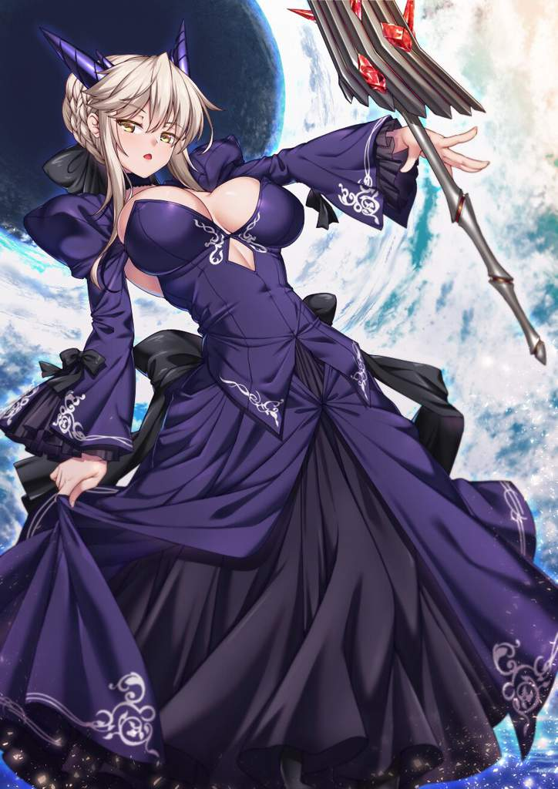

Blak Souls cuenta la historia de un Ashen One que despierta en Lhaplecia, un reino corrompido por el Blak. Explorando ruinas y enfrentando horrores, descubre secretos sobre los dioses, brujas y héroes caídos, mientras sus decisiones afectan el destino del reino y revelan su propio origen.
Elden Ring
Elden Ring trata de un Sinluz que recorre las Tierras Intermedias para derrotar a los semidioses que poseen fragmentos del Círculo de Elden y así decidir el destino del mundo.
Prototype
Alex Mercer, un hombre con poderes biomórficos que puede absorber recuerdos, identidades y formas de otros. Infectado por un virus en Nueva York, busca descubrir quién lo creó y por qué, mientras la ciudad se hunde en el caos entre militares y criaturas mutantes.
Fear & Hunger
Es un RPG de terror brutal y opresivo ambientado en una mazmorra maldita. Controlas a uno de varios personajes que descienden al lugar buscando respuestas o poder, pero todo dentro —monstruos, trampas, hambre, locura y eventos aleatorios— conspira para destruirte.
Listas sin orden
Bandas que me gustan
Unlike Pluto
Unlike Pluto es un productor de electrónica que mezcla funk, pop y ritmos bailables con melodías emotivas y pegajosas.
Skillet
Skillet es una banda estadounidense de rock cristiano y hard rock conocida por combinar guitarras potentes, sintetizadores y letras que abordan fe, lucha personal y superación. Su estilo mezcla rock alternativo, nu metal y symphonic rock, lo que les ha dado popularidad tanto en el ámbito religioso
Undream
UNDREAM es un productor sueco de electrónica que crea música atmosférica, oscura y emocional, con sintetizadores etéreos y voces melancólicas.
canciones que me gustan
“BLACKBLUEYELLOW” de Diana Goldberg
trata sobre la lucha interna con inseguridades y presión por ser perfecta. Aunque aparentemente tiene éxito, amor y fama, se siente atrapada en pensamientos negativos y emociones dolorosas. Los colores del título simbolizan heridas emocionales (negro y azul) y momentos de luz o esperanza (amarillo). La canción refleja cómo la búsqueda de perfección y aprobación puede generar ansiedad, autocrítica y soledad.
Borderline” de Nico Collins
representa el conflicto emocional de una persona que lucha con su propia mente: la confusión, la autocrítica, el deseo de huir del dolor, y al mismo tiempo el miedo a cambiar. Es una expresión de vulnerabilidad, de sentirse “al límite” — no solo como trastorno psicológico, sino como metáfora de un estado frágil, inseguro, y doloroso.
Lista descriptiva

Artoria Lancer Alter
Clase: Lancer
Alineamiento: Neutral Malvado
Apariencia: Armadura negra con detalles dorados, lanza oscura, expresión fría e imponente.
Personalidad: Seria, calculadora, implacable; menos compasiva que la Artoria normal.
Habilidades: Experta en lanza y combate; Noble Phantasm destructivo: Rhongo Alter.
Diferencia clave: Es la versión “oscura” y más poderosa de Artoria, sin los límites morales de la original.